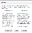

If you' like to download the PDF for reference or prefer to make edits and mark up a hard copy of your article, use the Composed PDFA PDF of the unedited article that you can download for reference. command on this menu.
If you choose the Composed PDF command, ArticleExpress asks whether you wish to download the PDF as a reference, or whether you'd like to annotate the PDF instead. The first option lets download a PDF of your article, but all edits must ultimately be made and submitted in the ArticleExpress editing interface. If you choose to annotate the PDF instead of using the online editing interface, you can't go back and use the commands in ArticleExpress to make changes to your article. All edits and reviews must be completed on the PDF copy.
If you choose this command by mistake but want to use the ArticleExpress editing and reviewing tools, contact your Production Editor for assistance.

You can download a Marked-Up HTML ProofA PDF of the edited article with track changes shown that can be downloaded for reference., which includes your changes marked as tracked changes. This file is a snapshot of your article to that point.
pdfmenu.htm | Copyright © 2015 Dartmouth Journal Services All Rights Reserved.
{kind=link}